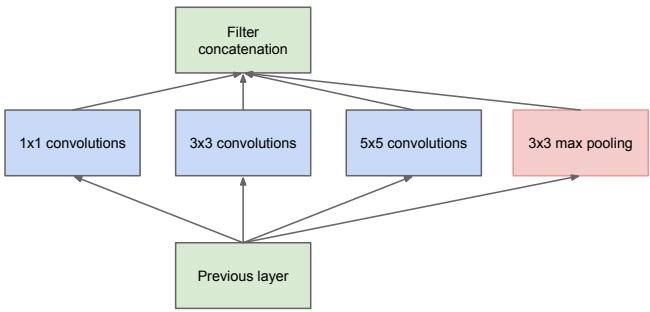
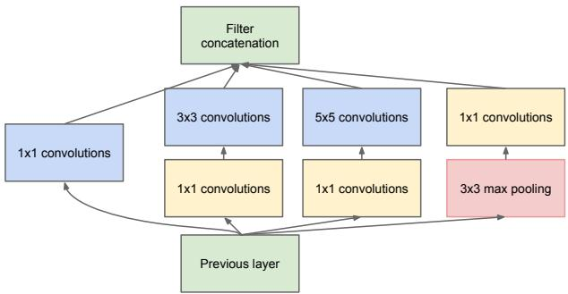

原文第 41 行：「Bigger size typically means a larger number of parameters, which makes the enlarged network more prone to overfitting」。人话：网络越大参数越多，数据不够就只会背答案。而按原文说法，带强标注的数据集「laborious and expensive to obtain」——贵得要命。
第二笔账：计算量二次增长
原文第 48 行：「if two convolutional layers are chained, any uniform increase in the number of their filters results in a quadratic increase of computation」。人话：两层卷积串起来，滤波器数一起翻倍，计算量翻四倍。算力预算总是有限的，所以「efficient distribution of computing resources is preferred to an indiscriminate increase of size」。
那能不能靠稀疏来省算力？原文讨论过这条路（用稀疏矩阵替换全连接层），但给出了一个非常工程化的否决理由：即使算术运算量减少 100×，lookup 与 cache miss 的开销也会占主导，所以「switching to sparse matrices might not pay off」。这才是 Inception 真正的出发点：既然稀疏在今天（2014 年）的硬件上不划算，那就造一个用稠密算子堆出来、但结构上模仿稀疏的模块。原文自己就是这么说的——Inception 一开始只是「a case study for assessing the hypothetical output of a sophisticated network topology construction algorithm」。
顺便，原文给这个模块的名字记了一笔有趣的账：网络名取的是 Lin 等人的论文名 Network in network 加一句网络梗 「we need to go deeper」；而「deep」在这里有双重含义——既指新增了 Inception 模块这一层级的组织，也指字面意义上网络更深了。「Inception」本身则是为 ILSVRC14 提交起的代号，不是方法学名称。
3. 核心机制：一个模块里同时看三个尺度
Inception 模块的做法，一句话：不再「一条直线堆到底」，而是设计一个「分叉再合流」的模块。同一个模块内并排放 1×1、3×3、5×5 卷积和一条 3×3 max pooling 支路，四条支路的输出在通道维拼在一起，成为下一层的输入。
关键的第二招是降维。原文说得很直接：「1×1 convolutions are used to compute reductions before the expensive 3×3 and 5×5 convolutions」——在昂贵的 3×3 与 5×5 之前，先用 1×1 把通道压瘦。这一招正是 Figure 2(b) 相对 Figure 2(a) 的全部区别。下面两张原图就是这对对照：

原图注（Fig. 2(a)）：「(a) Inception module, naï ve version」——Inception 模块的朴素版。 怎么看这张图：盯住左侧那一条竖着的输入：它向右分出四条支路，分别是一个 1×1 卷积、一个 3×3 卷积、一个 5×5 卷积、以及一条 3×3 max pooling（池化后面还跟了一个 1×1）；四条支路的输出在右侧汇成一个方块，也就是「输出滤波器组被拼成一个输出向量」。这版之所以叫朴素版，是因为它没有任何降维：3×3 与 5×5 直接吃整条宽通道的输入，一旦输入通道数很大（比如几百），5×5 的代价会大得离谱——这正是原文说的「computational blow up within a few stages」。

原图注（Fig. 2(b)）：「(b) Inception module with dimensionality reduction」——带降维的 Inception 模块。 怎么看这张图：把它和上一张逐条支路地对着看，你会发现结构几乎一样，唯一的差别是：在 3×3 与 5×5 之前各多插了一个 1×1 卷积，在池化之后也多插了一个 1×1 投影。这就是「dimensionality reduction」的全部内容。请特别注意池化后面那个 1×1：因为池化本身不改变通道数，如果不加这一层投影，池化支路会把它那一份通道原样带进拼接结果，导致输出通道数从一层到下一层不断膨胀——原文把这一点称为「an inevitable increase in the number of outputs from stage to stage」。
这张图在画什么：上半部分把 Figure 2(b) 重画了一遍：左边一块输入特征图（28×28×256），向右分出四条支路——只有 1×1 的那条、1×1 降维接 3×3 的那条、1×1 降维接 5×5 的那条、3×3 池化接 1×1 投影的那条——四条支路汇进右侧那根竖着的「通道维拼接」条。下半部分是一条支路的参数账对照：直接上 5×5 和先降维再上 5×5，参数量差了一倍。 怎么看这张图：① 先顺着绿色横线走一遍四条支路，注意每一条都停在同一个竖条上，而不是两两相加；② 再看下半部的两个方块：朴素版是一个胖方块，降维版是两个瘦方块——「多了一层反而更省」这件事是反直觉的，但它就是靠中间那 32 个通道实现的；③ 注意最下面那行小字：这两个算式是本课按卷积参数公式自己算的算例，不是原文表格里的数字。 要记住的一句话：Inception 的精髓不是「多路并行」，而是「并行之前先各自瘦身」——没有 1×1 降维，多路并行会贵到不可用。
4. 公式与形状账：1×1 到底省了什么
这里要提前说明一件事：GoogLeNet 这篇论文全文没有一个编号公式。它表达结构的方式是两张结构图（Figure 2、Figure 3）加一张逐层的算力表（Table 1）。原文对模块的描述是一句话：「output filter banks concatenated into a single output vector forming the input of the next stage」。所以本课的「公式」是从卷积的定义直接写出来的参数账，而不是原文里的式子——这一点必须写清楚，免得读者以为原文给了这些算式。
$$\text{一个卷积层的参数量} = k \times k \times C_{\text{in}} \times C_{\text{out}} + C_{\text{out}}$$
原文还给了这条账的总体结论（这句可以放心引用，因为它出在正文里）：所有旋钮都调好之后，「networks that are 3−10× faster than similarly performing networks with non-Inception architecture」——相比性能相当的非 Inception 网络，能快 3 到 10 倍。但要付出代价：「this requires careful manual design at this point」——需要小心翼翼地手工设计，这句话后面我们会回来算它的账。
第八季 0165 YOLO-SLAM 的前身、本季 0191 的主角 YOLO（2016）——它明确把 Inception 模块拆掉了。原文原话：「Our network architecture is inspired by the GoogLeNet model for image classification [33] ... Instead of the inception modules used by GoogLeNet, we simply use 1×1 reduction layers followed by 3×3 convolutional layers」。这是本案最有价值的一条：后人对 Inception 的取舍，恰恰证明「1×1 降维」才是被继承最多的那个零件，而多路并行那部分被丢掉了。
第七季与回环检测——2021 年的 DeepSLAM 里，回环检测网络（Loop-Net）用的是 Inception 变体：原文说「The Inception ResNet V2 architecture [43] is adopted here. The Loop-Net maps images into feature vectors for loop closure detection」。这是本季接回「学习式回环检测」的最强接口。
第八季 0159 SemanticFusion——语义建图的代表方法之一，它把 VGG-16 当分割主干：「Their architecture is itself based on the VGG 16-layer network [21], but with the addition of max unpooling and deconvolutional layers which are trained to output a dense pixel-wise semantic probability map.」注意这句里的后半段：VGG 只负责编码，要出逐像素结果还得加反池化与反卷积——这就是 0190 FCN 要讲的接力。
学习式里程计——2018 年的 UnDeepVO 的位姿估计器是「a VGG-based [19] CNN architecture」，输入两张连续单目图、输出 6 自由度变换；2021 年 DeepSLAM 的 Tracking-Net 则是「constructed from a CNN part of the VGGNet [39] plus an RNN」。
原文承认滤波器尺寸限定在 {1×1, 3×3, 5×5} 是「based more on convenience rather than necessity」（出于便利而非必然）；承认只在高层用 Inception 模块、低层保留传统卷积，是「not strictly necessary, simply reflecting some infrastructural inefficiencies」；也承认这套设计「requires careful manual design at this point」。人话：这不是一个能自动长出来的架构，是一层层试出来的配方。
毛病二：作者自己不确定成功该归功于谁
原文第 56 行原话：「although the Inception architecture has become a success for computer vision, it is still questionable whether this can be attributed to the guiding principles that have lead to its construction.」人话：结果好，但未必是那套设计原则带来的好——可能只是碰巧调对了。这种诚实很少见，但读课时必须照实转述。
毛病三：更宽更深的版本增益「仅有一点」
论文做过一个更宽更深的 Inception 版本，结果「improve the results only marginally」，于是没写进正文；7 个 ensemble 模型里有 6 个用的是 Table 1 那个配置。也就是说，这套模块的可扩展性是有天花板的。
毛病四：检测任务里连框回归都没做
原文第 147 行：「contrary to R-CNN, we did not use bounding box regression due to lack of time」。人话：检测那一半的工作其实是半成品。这直接说明：它不是一个检测器，它只是一个分类器加一根检测的脚手架。